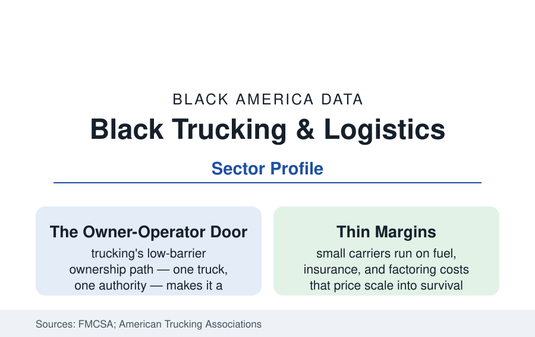

Black Business
Black Trucking and Logistics: Owner-Operators on the Freight Economy
Trucking moves most of America's freight, and Black drivers and owner-operators form a substantial slice of it. The FMCSA and industry data on Black-owned carriers.

Trucking is the ownership economy's last open door: a commercial license, one truck, and a federal operating authority create a business — and Black Americans have walked through it in the hundreds of thousands, as drivers (a substantial share of the nation's truck drivers in the BLS data) and as the owner-operators and small fleet owners of the carrier registry. The freight business is also brutally cyclical, thinly capitalized, and consolidating. This article reports the Black trucking and logistics data.
The Registry: Counting Black Carriers
The FMCSA's carrier census counts the industry's structure: hundreds of thousands of registered carriers, the overwhelming majority tiny (the industry's median fleet is a handful of trucks, and single-truck authorities are its largest single class), a structure in which Black-owned carriers participate at every scale — from the one-truck owner-operator to the regional fleets of the Black trucking companies (the industry's Black-owned majors in the trade rankings run fleets in the hundreds and revenues in the tens of millions, headquartered from Atlanta to Kansas City to the port cities). The Census Bureau's ABS transportation tables fill in the sector's Black-owned employer firm counts and receipts, and the port economy writes a special chapter: the drayage fleets of the great ports (the Oakland, Savannah, and Long Beach dray workforces and owner-operator fleets carry heavy Black participation, and the ports' clean-truck programs' financing data are a business file of their own — new-truck mandates pricing the small drayman out or financing him in, by port and by year).
The Economics of the Small Carrier
The industry's cost stack is the business file: the truck itself (a new Class 8 tractor priced in the high five to six figures in the current data — the used market the entry tier), diesel (the largest variable cost, hedged by fuel surcharges the smallest carriers have the least power to impose), insurance (commercial trucking premiums among small carriers' most volatile lines in the current decade's data — a quiet consolidation force), maintenance, and the factoring and quick-pay systems through which small carriers finance the shippers' thirty-to-ninety-day payment terms (at discount rates that take points off already thin margins in the freight-finance data). The freight cycle rules all: the spot-rate indices' booms (the pandemic freight surge minted new authorities at record rates in the FMCSA filings) and busts (the freight recessions' authority revocations — the registry's churn data are the cycle's body count) make trucking the most cyclically exposed ownership sector in this section, and its Black owners carry that exposure with the financing profile's thinner reserves.
The Warehouse and Logistics Layer
The broader logistics economy adds the warehousing tier (the employment profile's logistics workforce is this file's labor side): third-party logistics firms, freight brokerages (the asset-light layer whose entry costs are lowest and whose Black-owned firms are a growing trade-press file — the brokerage's desk-and-phone economics bypassing the truck's capital barrier), courier and last-mile fleets (the contract-delivery networks of the e-commerce era — the Amazon DSP and FedEx Ground contractor models, whose ownership economics and route sales are a distinct business data set), and the supply-chain management tier of the Fortune logistics departments. The port, airport, and intermodal geographies of the cities section are this business's map: the logistics clusters of Memphis, Savannah, the Inland Empire, and Atlanta's south side are where its Black firms concentrate, following the freight.
Institutions and the Policy File
The sector's organized layer: the National Minority Trucking Association and the state and port trucking associations' minority chapters, the supplier-diversity procurement of the big shippers (the Fortune manufacturers' and retailers' diverse-carrier programs — freight spend is among the largest supplier-diversity categories in the corporate data), the federal DBE and SBA programs' transportation files, and the industry's live policy ledger (the driver shortage's official counts versus the wage data's counter-reading, the classification battles over owner-operator status in the state statutes, the emissions rules' equipment timelines, and the insurance market's reform fights in the statehouses). The apprenticeship and CDL-school pipeline — the trucking schools of the community colleges and the proprietary chains, whose financing data carry their own consumer file — feeds the driver base the owners hire from.
Reading the Trucking Data
Trucking measures Black business at its most elemental: a machine, a license, and the open road as the market — the lowest ceremony and the thinnest ice in American ownership. Its Black owners haul the economy's physical substance on margins set by fuel and freight cycles they do not control, and the registry's churn says how many fall through each winter. It is the ownership economy with the romance and the risk both left in.
More in Black Business
Black-Owned Businesses: Counts, Receipts, and the Representation Gap
About 161,000 Black-owned employer firms and three million solo ventures: how the Census Bureau counts Black business ownership, where firms concentrate, and the gap between population share and business share.
Black Median Net Worth: The Wealth Gap in Federal Reserve Data
The Federal Reserve puts Black median family net worth at $44,900, against $285,000 for White families — about 16 cents on the dollar. The widest gap in economic data.
Black Buying Power: The $1.8 Trillion Consumer Economy
Black buying power is estimated at about $1.8 trillion — larger than the economy of most nations. What the figure measures, who produces it, and what it buys.
Source: Federal Motor Carrier Safety Administration carrier registration data; American Trucking Associations; U.S. Census Bureau Annual Business Survey (transportation sector); Bureau of Labor Statistics driver data.